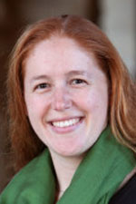
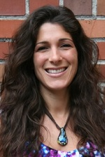
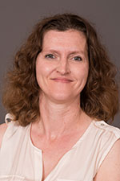
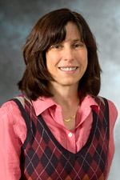
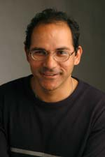
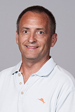

<!DOCTYPE html>
<html><!-- InstanceBegin template="/Templates/2015standard.dwt" codeOutsideHTMLIsLocked="false" -->
<head>
<meta http-equiv="Content-Type" content="text/html; charset=utf-8" />
<meta name="viewport" content="width=device-width, initial-scale=1.0" />
<!-- InstanceBeginEditable name="doctitle" -->
<title>STEM Research Degrees | Curriculum + Instruction | UMN</title>
<!-- InstanceEndEditable -->
<link rel="icon" type="image/png" href="/assets-2015/favicons/favicon-gold.ico"/><!--  global asset  -->
<link rel="stylesheet" href="../../assets/css/core2015.css" media="all" type="text/css" /><!--  local asset  -->
<link rel="stylesheet" href="../../assets/CSS/umn-HF.css" media="all" type="text/css" /><!--  local asset  -->
<link rel="stylesheet" href="../../assets/CSS/Theme-CandI-Land.css" media="all" type="text/css" /><!--  local asset  -->
<link rel="stylesheet" href="/ci/Assets/Fonts/font-awesome-4.3.0/css/font-awesome.min.css"><!--  local asset  -->
<!--  This just makes HTML5 operate on old versions of IE -->
<!--[if lt IE 9]><script src="http://html5shim.googlecode.com/svn/trunk/html5.js"></script><![endif]-->
<script type="text/javascript" src="/assets-2015/JS/jquery-ui-1.10.0/js/jquery-1.9.0.js"></script><!--  global asset  -->
<script type="text/javascript" src="/assets-2015/JS/jquery-ui-1.10.0/js/jquery-ui-1.10.0.custom.min.js"></script><!--  global asset  -->
				<link rel="stylesheet" href="../../assets/js/jquery/css/ui-lightness/jquery-ui-1.10.0.custom.min.css" media="all" type="text/css" /><!--  local asset  -->
<script type="text/javascript" src="../../assets/js/responsive.js"></script><!--  local asset  -->
<script type="text/javascript" src="/assets-2015/js/globalnav.js" ></script><!--  global asset  -->
<script type="text/javascript" src="/assets-2015/js/ajaxRSS.js"></script><!--  global asset  -->

<!-- InstanceBeginEditable name="head" -->

<!-- InstanceEndEditable -->
</head>

<body> 
	<div id="container">
		<!--#include file="../../assets/includes/umn-header.asp" -->
  	<!--#include file="../../assets/includes/dept-header.asp" -->
			<div id="restabs">
				<div id="tabnav"><span id="menuicon">Menu</span></div>
			</div><!-- ./restabs -->
    	<br class="clearfloat" />
    	<nav>
    	<!--#include file="../../assets/includes/nav.asp" -->
    	</nav>
    	<div id="maincontent"><!-- InstanceBeginEditable name="main-content" --> <div class="pheadercopy">
        <h1><span>M.A. | PhD</span><br>
        STEM Education      </h1>
        <p><strong>Priority deadline</strong>: December 1</p>
      </div>
       
    
    
      
    <div class="whole"></div>
    <div class="centerbox">
    <h2>Faculty advisers</h2>
    
    </div>
     <div class="quarter bitebox">
       
         <h2><span>Assistant Professor</span><br>
       Erin Baldinger</h2>
         <p><a href="../../People/profiles/baldinger.html" target="new">Full profile</a></p>
        
    </div>
    
 

    <div class="quarter bitebox">
    
      <h2><span>Assistant Professor</span><br>
      Julie <br>Brown</h2>
    <p>Developing <a href="http://cehdvision2020.umn.edu/cehd-blog/culturally-responsive-stem-education/" target="new">culturally responsive STEM teachers</a> | Design-based research |  Curriculum design | Urban STEM education. <a href="../../People/profiles/brown.html">Full profile</a></p>
    
    </div>
       
    
    <div class="quarter bitebox">
    
      <h2><span>Associate Professor</span><br>
      Lesa Covington Clarkson</h2>

     <p><a href="http://www.cehd.umn.edu/people/profiles/Clarkson/default.html" target="new">Identifying strategies to increase underrepresented student achievement</a> | Math in urban classrooms. <a href="../../People/profiles/clarkson.html">Full profile</a>     </p>
  
    
    
    </div>
   
    
      <div class="quarter bitebox">
      
        <h2><span>Associate Professor</span><br>
        Kathleen Cramer</h2>
  
    <p>Teaching + learning rational numbers in grades 4-8 | Fraction learning in 4th + 5th graders | Teacher preparation. <a href="../../People/profiles/cramer.html" target="new">Full profile</a></p>
  
    </div>
    
     <div class="whole"></div>

   <div class="quarter bitebox">
   
     <h2><span>Professor</span><br>
      Gillian Roehrig</h2>

    <p>Science teacher development | STEM integration | STEM education in Native communities | Chemistry education. <a href="../../People/profiles/roehrig.html" target="new">Full profile</a></p>
  
    </div>
    
    
    
   <div class="quarter bitebox">
   
     <h2><span>Associate Professor</span><br>
      Susan Staats</h2>

    <p><a href="http://www.cehd.umn.edu/people/profiles/Staats/default.html" target="new">Mathematics Education </a>| Ethnography of Speaking | Linguistics | Anthropology. <a href="../../People/profiles/staats.html" target="new">Full profile</a></p>
  
    </div>
     <div class="quarter bitebox">
     
       <h2><span>Associate Professor</span><br>
       Bhaskar Upadhyay</h2>

    <p>Science as an agent for change, empowerment, and social justice for urban minority youth | Science learning for immigrant students and families. <a href="../../People/profiles/upadhyay.html" target="new">Full profile</a></p>
    </div>
    <div class="quarter bitebox">
    
      <h2><span>Senior Lecturer</span><br>
      Terrence Wyberg</h2>

    <p><a href="http://www.cehd.umn.edu/Connect/2015/TERI.html" target="new">Math teacher education</a> | Teachers' content knowledge as related to their teaching approaches. <a href="../../People/profiles/wyberg.html" target="new">Full profile. </a><em>Adviser for M.A. students only. </em></p>
    </div>

    
    
    <div class="whole"></div>  <div class="whole"></div>  <div class="whole"></div>
    <div class="centerbox">
    <p class="icon"><i class="fa fa-filter fa-3x"></i></p>
    <h2>Focus areas</h2></div>
    
    
   <div class="third bitebox">
         <h2><span>Choose your focus</span><br>
     M.A. curricular strands       </h2>
         <h3>Science Education       </h3>
       <p>The field of science education is  broad  and includes science and environmental education at the K-12 levels,  the college level, in informal and adult settings and in early  childhood. </p>
       <p>Focus areas of research include: </p>
       <ul>
         <li>Preparing  pre-service science teachers (K-12)</li>
         <li>Induction and  mentoring beginning science teachers</li>
         <li>Design and implementation of  curricula across the K-college spectrum</li>
         <li>Environmental education</li>
         <li> Cooperative learning</li>
         <li> Social justice</li>
       </ul>
       <center>
         <p><a href="https://docs.google.com/document/d/1gbHydvUU6b_Hv_24iVAm7khqICBqj4ndyZpzQx4Qq0M/edit?usp=sharing" target="new">Science ed. thesis (Plan A) curriculum</a></p>
       <p><a href="https://docs.google.com/document/d/1fXcfyhHEOzgoxfZM6KlkLxXnj-j0g8pY0U6WBGyH8JM/edit?usp=sharing" target="new">Science ed. final paper (Plan B) curriculum</a></p>
       <p><a href="PlanAorB.html" target="new"><em>Help: Plan A or Plan B?</em></a></p>
       </center><br><br>
       <h3>Math Education    </h3>
       <p>Mathematics education is in transition. We are focused on helping  schools move from an emphasis on algorithms to teaching  problem solving, communication, connections, reasoning, and  representation.</p>
       <p>Our research, outreach, and curriculum  help teachers change   from a &ldquo;teaching by telling&rdquo; pedagogy to one which emphasizes conceptual  understanding and problem solving. </p>
       <center> 
         <p><a href="https://docs.google.com/document/d/1fOeZ9SRcykdIr_T5-7PUeM_82zqvZLYoJtdlx6bS4Cs/edit?usp=sharing" target="new">Math ed. thesis (Plan A) curriculum</a></p>
     <p><a href="https://docs.google.com/document/d/11xyNYn5wD1bo3YxVzowow9pvhNf0RAk1FDxG4mjjK6o/edit?usp=sharing" target="new">Math ed. Final Paper (Plan B) curriculum </a></p>
     <p><a href="PlanAorB.html" target="new"><em>Help: Plan A or Plan B?</em></a></p>
       </center>
       <p>&nbsp;</p>


   
   
        </div>
 <div class="twothird bitebox">

      <h2><span>Choose your focus</span><br>
       PhD specializations</h2>
        <center><p><strong>54 course credits + 24 thesis credits = 78 total </strong></p>
       
         <a href="https://docs.google.com/document/d/1sletjqbNCvhyu9rR6hQMu7ZbU7iNccXTsSEWvDLmc0k/edit?usp=sharing" target="new">Common curriculum</a></center><br><br>
         
         
          <h3>Science </h3>
      <p>This specialization includes both science and  environmental education in PK-12 settings, at the college level, and in  informal and adult settings.  </p>
      <p>Focus areas of research include: </p>
      <ul>
        <li> pre-service science teacher education, and induction | mentoring of beginning science teachers</li>
        <li>design and implementation of  K-16 curricula</li>
        <li> environmental education, and social justice</li>
      </ul>
    <p>You will engage in discipline-based education research  in biology education, chemistry education, earth-system science  education, and physics education. </p>
    <center></center>
   <br>
<h3>Math </h3>
      <p>Our faculty are cutting-edge   researchers, and spend significant time in schools, collaborating with  teachers,  and conducting  research to improve mathematics curricula and  pedagogy.</p>
      <p>Coursework in this field emphasizes both:</p>
      <ul>
        <li> the latest  theories in mathematics </li>
        <li>and teaching  through hands-on methods that focus on problem solving, spatial  visualization, and algebraic competence.</li>
      </ul>
     <center></center>
<br>
<h3>Engineering </h3>
      <p>Engineering education is an emerging research discipline that spans  pioneering work in how engineering concepts are introduced, learned and  effectively taught at the K-12 level. </p>
      <p>Connect with students and  faculty in the University of Minnesota's <a href="http://cse.umn.edu/" target="new">College of Science Engineering</a>. Be challenged by the rigors of the engineering field and  the complexities of integrating and evaluating engineering curricula in  both formal and informal settings. <br>
      </p>
      <center></center></br>
        <h3>Agricultural Education </h3>
<p>This is a research-oriented program that will prepare students for university faculty positions, public and corporate leadership roles in education, natural resource management, Extension Education, international development, and many other professional careers in agriculture and life sciences. </p>
<br>
        </p>
      
      </div>
    
      <div class="whole"></div>  <div class="whole"></div>  
      
     
       
 
 


 
        
        
  
      

    
       
       
       
           <div class="whole">
        
</div>

   <div class="half bitebox">
          <p class="icon"><i class="fa fa-usd fa-3x"></i></p>
      <h2><span>Opportunities</span><br>Funding </h2>
      <p>Support is available in the form of: </p>
      <ul>
        <li>Teaching Assistantships. The majority work as student teaching supervisors for M.Ed. initial licensure students. Daytime availability, a teaching license, and teaching experience are required</li>
        <li> Research Assistantships</li>
        <li>Fellowships. Based on a departmental nomination process. You will be notified by the Director of Graduate Studies if you are being considered for a fellowship</li>
      </ul>
      <p>A typical full benefits assistantship (tuition, health insurance + stipend) 20 hours/week at approximately $18/hour. Benefits are pro-rated based on the appointment percentage. </p>
      <p>Have a complete application in by December 1 to be considered for these positions for the following academic year.</p>
      <p>While support is not guaranteed, we make every attempt to financially support full-time students through completion. You may also  explore assistantships available outside our department on the University's<a href="https://employment.umn.edu/applicants/jsp/shared/search/Search_css.jsp"> employment page</a>. </p>
      <p><a href="http://www.cehd.umn.edu/graduate/tuition.html">Tuition and cost information. </a></p><br><br>
      
        <p class="icon"><i class="fa fa-arrows-h fa-3x"></i></p>
     <h2><span>Credit for past work</span><br>
     Transfer credits</h2>
        <p>M.A. students must complete at least 60% of coursework (not including thesis credits) within our program. PhD students may transfer no more than 15 credits from an outside institution. </p>
     <p>
A maximum of 12 graduate course credits taken as non-degree seeking or non-admitted status at the University of Minnesota can be transferred--this is counted separately from the maximum 60%, or 15 outside institution credits. </p>
     <p>For example, a PhD student could transfer a maximum of 27 credits (15 outside + 12 non-degree from UMN). </p>
     <p>If you earned a M.A. at the UMN, please contact the Graduate Studies Coordinator to discuss transfer procedures.</p>
     <p>Thesis credits cannot be transferred.</p>
     <p>After you are admitted, you  will work with your adviser to determine which credits may transfer. </p>
   
        
    
    </div>
            
            
 <div class="half bitebox">
    <p class="icon"><i class="fa fa-university fa-3x"></i></p>
      <h2><span>Where our grads go from here</span><br>
      Placements in higher education      </h2>
      <p> <span>Assistant Professor, Teacher Education, St. Thomas University | </span><span id="docs-internal-guid-c0d25e90-4fc0-0987-1c5c-a6c54b411b5c">Assistant Professor, University of Idaho | </span>Visiting  Assistant Professor at Carleton College | Assistant Professor of Science Education at Iowa State University | Assistant Professor, Purdue University | Assistant Professor of Natural Sciences at Metropolitan State University | Assistant Professor of Mathematics Education at Texas A&amp;M | Lecturer at the University of Minnesota | Associate Professor of Teacher Education and Science at Crown College | <span id="docs-internal-guid-c0d25e90-4fbf-6f1f-05e7-75f167332a33">Visiting Assistant Professor, University of Wisconsin-River Falls</span> | <span id="docs-internal-guid-c0d25e90-4fbf-8c16-1e65-aa194ff4691d">Assistant Professor, Curriculum Instruction and Chemistry, North Dakota State University</span> |  <span id="docs-internal-guid-c0d25e90-4fbf-af22-8bde-c9a243bc912a">Assistant Professor, Mathematics Education, University </span><span>of Nevada - Las Vegas</span> |  <span id="docs-internal-guid-c0d25e90-4fbf-d529-1367-3763e98451e3">Assistant Professor, SUNY Brockport</span> |  <span id="docs-internal-guid-c0d25e90-4fc1-76d2-9639-437d448f1435">Assistant Professor, Hamline University</span> | <span id="docs-internal-guid-c0d25e90-4fc1-9070-a352-c7a157267757">Associate Professor, University of Idaho | </span>Assistant Professor, Mathematics and Computer Science, Bemidji State University <span id="docs-internal-guid-c0d25e90-4fc1-d047-622d-64755b9424e">| </span><span id="docs-internal-guid-c0d25e90-4fc1-ec08-3b25-21a106b80eaf">Assistant Professor, School of Education, North Dakota State University</span> | <span id="docs-internal-guid-c0d25e90-4fc2-39f7-bbf6-65339c1802bf">Assistant Professor, DePaul University</span> | <span id="docs-internal-guid-c0d25e90-4fc2-4ffb-26a7-4a641813f142">Associate Professor, University of Montana</span> | <span id="docs-internal-guid-c0d25e90-4fc2-7bd8-14a0-4837ed91d9f4">Associate Professor, Western Michigan | </span><span id="docs-internal-guid-c0d25e90-4fc2-9ff6-9c0d-53353dc4c7ab">Assistant professor, Augsburg University</span> | <span id="docs-internal-guid-c0d25e90-4fc1-5190-ec9d-45d2792e80df">Assistant Professor, Winona State University</span> </p><br><br><br>
  
      <h2>
      Placements in K12 and other settings </h2>
      <p><span>Program Specialist at Out for Equity, St. Paul Public Schools | </span><span id="docs-internal-guid-c0d25e90-4fc0-2a52-f163-5e2b07d8f283">Coordinator of Science and Mathematics, St. Cloud Public Schools | </span><span id="docs-internal-guid-c0d25e90-4fc0-43b0-6f03-fb1f3024e30b">STEM Coordinator, Owatonna Public Schools</span> | <span id="docs-internal-guid-c0d25e90-4fc0-6831-ceef-cefba8dd6271"> Science teacher at St. Paul Academy</span><span id="docs-internal-guid-c0d25e90-4fc1-0e19-c65b-d7bf8ee748ab"> | Director of Middle School at Visitation School | High School Chemistry Teacher, Mounds View High School</span> | Physics teacher at Richfield High School<span id="docs-internal-guid-c0d25e90-4fc1-d047-622d-64755b9424e5"> | Science Educator, Biological Science Curriculum Study (BSCS) </span></p><br><br>
      
        <p class="icon"><i class="fa fa-question fa-3x"></i></p>
     <h2><span>Graduate Studies Coordinator</span><br>
       Kristina Pearson</h2>
     <center><p><a href="mailto:cigs@umn.edu">cigs@umn.edu</a><br>
Fax: (612) 624.8277<br>
125H Peik Hall<br>Office hours 8:00 - 3:30</p></center>
    </div>

 
   
           
             <div class="whole"></div>
   
  
       
    
 
   
   
   <div class="centerbox"><br> <p class="actionbutton"><a href="Admission.html">Get Ready to Apply</a>    </p>
   </div>
    
    <div class="whole"></div>

      <!-- InstanceEndEditable -->
      </div><!-- ./maincontent -->
        <br class="clearfloat" />
			<!--#include file="../../assets/includes/footer.asp" -->
	</div><!-- ./container -->
</body>
<!-- InstanceEnd --></html>
